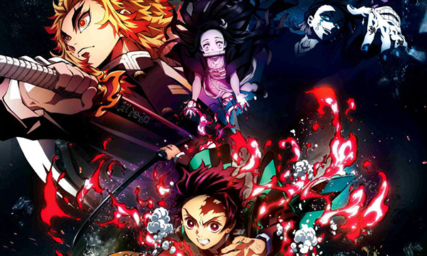
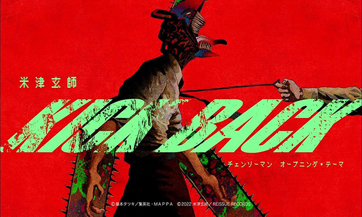
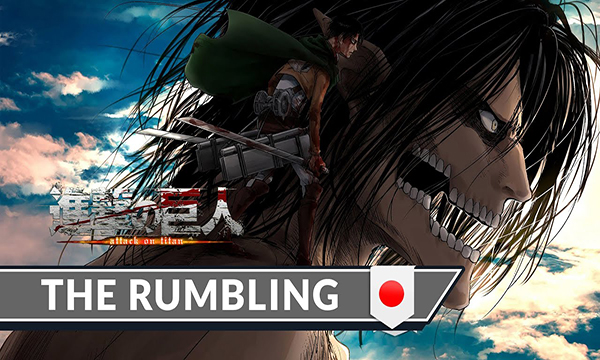

Crunchyroll Menu Desde 2017, creó los Animes Awards, este evento se dedicó anualmente a reconocer lo mejor de las series y películas de anime.



Los Anime Awards son una celebración anual que
honra a los creadores, músicos y actores de doblaje
del anime. Los ganadores de cada categoría son elegidos
por los fans del anime, quienes votan directamente en
el sitio web oficial de los Anime Awards.
Entre las más importantes categorías se encuentra el mejor
opening del año, dejando como ganadores estos últimos años a:
Mejores openings
21/febrero/2024 | Jessy Lira